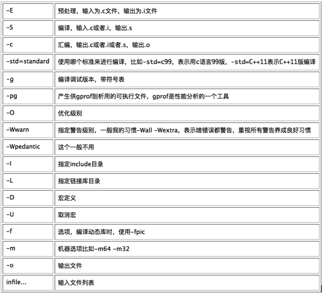
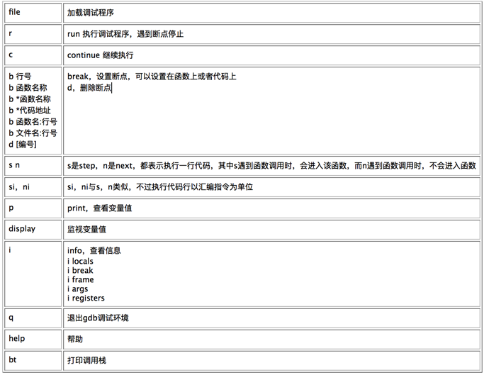

| 命令 | 解析 |
|---|---|
| o | 在光标的下一行插入一行，并进入编辑模式 |
| O | 在光标的上一行插入一行，并进入编辑模式 |
| a | 将光标移动到下一个字符，进入编辑模式 |
| A | 光标移动到行尾，进入编辑模式 |
| i | 进入编辑模式 |
| I | 光标移动到行首，进入插入模式 |
| 命令 | 解释 |
|---|---|
| h | left |
| j | down |
| k | up |
| l | right |
| gg | 光标移动到文件第一行 |
| G | 光标移动到文件最后一行 |
| :n | 光标移动到第n行 |
| 命令 | 解释 |
|---|---|
| dd | 删除行，并复制 |
| p | 粘贴 |
| yy | 复制 |
| dw | 删除单词，并复制 |
| yw | 复制单词 |
| u | 撤销 |
| ctrl + r | 反撤销 |
| r | 替换，只替换一个字符 |
| R | 替换，并且进入编辑模式 |
| x | 删除一个字符，并复制 |
| [n]dd or d[n]d | 表示删除n行，并复制 |
| [n]yy | 表示复制n行 |
| [n]dw | 表示删除n个单词，并复制 |
| [n]yw | 表示复制n个单词 |
| [n]x | 表示删除n个字符，并复制 |
| 命令 | 解释 |
|---|---|
| /[查找内容]或者使用#查找光标所在单词 | 查找 |
| n | 查找下一个 |
| N | 查找上一个 |
| :%s/100/200/g | 把100替换成200 |
| :%s/\//abc/g | 把/替换成abc，当替换内容或者被替换内容带有/时，可以使用\来转义 |
| 命令 | 解释 |
|---|---|
| gg=G | 自动排版 |
| :! | 执行外部shell命令 |
| :make | 执行make |
| :split | 上下分屏 |
| :vsplit | 左右分屏 |
| ctrl+ww | 切换焦点 |
| 命令 | 解释 |
|---|---|
| 在工程目录下执行vim，并ctrl+p | 生成tag文件 |
| ctrl+o | 打开文件树 |
| f4 | 打开标识符导航 |
| ctrl+] | 跳转到光标所在标识符定义处 |
| ctrl+t | 回到跳转之前位置 |
| ctrl+p | 补全提示 |
| :A | 打开对应的C/H文件 |
| :AV | 分屏打开对应的C/H文件 |
使用qtcreator来倒入已有C/C++工程，并设置好头文件目录之后，写代码也是很快的。
gcc全称为GNU Compiler Collection（GNU编译套件）。GNU is Not Unix。
GNU/Linux。
预处理
编译
汇编
链接

Makefile元素：
目标可以有多个依赖，依赖有传递性。make命令去执行Makefile，Makefile的名字固定为Makefile或者makefile，如果名字不是固定的名字，需要用-f指定makefile。
make默认生成第一个依赖项。如果想生成其他依赖项，直接在make后跟依赖项即可。比如make install。
习惯：第一个目标一般叫做all
可以使用变量来简化Makefile，定义变量可以使用
缺省规则是make系统提供默认的规则，比如x.o如果没有指定规则，那么默认有：
shell函数可以用来执行shell命令，并且将标准输出赋值给变量
替换
可以通过include包含其他子makefile。
编译程序需要用-g选项
调试时使用gdb ./a.out
查看代码
l(list)命令，可以显示代码
打断点
b(break) + 行号，在该行打断点
运行程序
r(run) 运行到下一个断点处，第一次执行r时，如果有命令行参数，可以直接在r后面加上。
打印变量
p(print) + 变量名称，可以用来显示变量
调用栈
bt命令查看调用栈
单步调试
s(step)，单步进入
n(next)，单步跳过

作为个人开发使用
作为团队合作开发使用
版本管理工具是软件开发的作弊器。
步骤1:安装 sudo apt-get install git
Windows: gitbash（百度搜索）
步骤2:创建代码仓库
git init
该命令在当前目录下，创建一个git仓库
步骤3:将修改的代码加入到仓库
git add lm.c
git commit -m "version 1.0"
步骤4:步骤3重复执行多次
步骤5:提交内容可以通过
git revert进行撤销
步骤6:可以通过分支来进行大版本管理
git branch查看当前仓库的分支
git branch {branchname} 在当前分支的状态下，创建分支
git checkout {branchname}切换分支
git branch -d {branchname}删除分支
git branch -D {branchname} 强制删除有代码修改的分支，慎重使用
第一次使用git提交代码之前，应该使用
git config --global user.name "your name"
git config --global user.email "your email"
编辑目录称之为暂存取，只是编辑，不提交，那么git仓库中，并没有保存这次编辑的内容。
git status 查看暂存取有修改的文件
git log 查看提交日志
git diff 查看分支的差异，生成diff文件
注册账号（邮箱）
设置SSH-key
ssh-keygen -t rsa -b 4096 -C "注册时的邮箱"
eval "$(ssh-agent -s)"
ssh-add ~/.ssh/id_rsa
将公钥($HOME/.ssh/rsa.pub)设置到你的github账号中。
在github创建仓库
git clone git@github.com:suibian123/sb.git
git clone：从远程拷贝仓库
git push origin master:master：把当前仓库的代码提交到远程仓库，其中origin是远程仓库的名称，前面的master表示本地仓库的分支，后面的master表示远程仓库的分支
git merge 分支号，将参数指定的分支，合并到当前分支，可能会有冲突发生。
git fetch，获取远程服务器的分支信息
思想+工具+行动
source insight